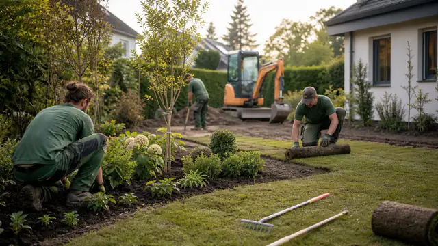

Stadtgrün NordGaLaBau · Hamburg
Gärtner im Garten- & Landschaftsbau (m/w/d)
Hamburg Vollzeit Unbefristet
Du gestaltest private Gärten, pflanzt Gehölze und setzt Außenanlagen um. In diesem Beispielbetrieb arbeitest du in einem festen Team mit modernen Maschinen.
Das machst du bei uns.
- 01Gärten und Außenanlagen anlegen
- 02Pflanzarbeiten und Gartenpflege übernehmen
- 03Projekte gemeinsam im Team umsetzen
Passt zu dir?
- Eine Ausbildung im Garten- und Landschaftsbau oder praktische Erfahrung
- Freude an Pflanzen, Gestaltung und der Arbeit im Freien
- Verlässlichkeit und Lust, gemeinsam etwas auf die Beine zu stellen
Was für dich drin ist.
Unbefristet
Eine langfristige Perspektive im festen Team.
Gemeinsam anpacken
Feste Kolleginnen und Kollegen, die sich unterstützen.
Gutes Werkzeug
Maschinen und Arbeitsmittel für deinen Arbeitsalltag.
Raum zum Lernen
Neue Aufgaben und Wissen, das ihr miteinander teilt.
Stadtgrün Nord.
Lern uns kennen.
Von der ersten Pflanze bis zum fertigen Garten: Bei Stadtgrün Nord gestalten wir Außenräume, in denen Menschen gerne Zeit verbringen. Unser Beispielteam arbeitet in Hamburg und Umgebung – mit kurzen Wegen, offenen Worten und Freude an gutem Handwerk.

Klingt nach dir?
Lass uns kennenlernen.
Ein erster Kontakt zu Stadtgrün Nord. Hier kannst du den Bewerbungsablauf als Vorschau ausprobieren.